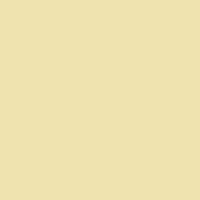
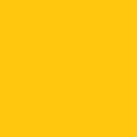
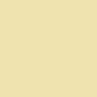
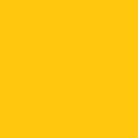

Beskrivning
Klicka på bilderna ovan för att se ett par exempel som använder sig av detta plugin.
Du kommer då att se den fullständiga storleken
av bilden, samt en "caption" med bildens titel och beskrivning.
Läs vidare för att se installationsproccessen.